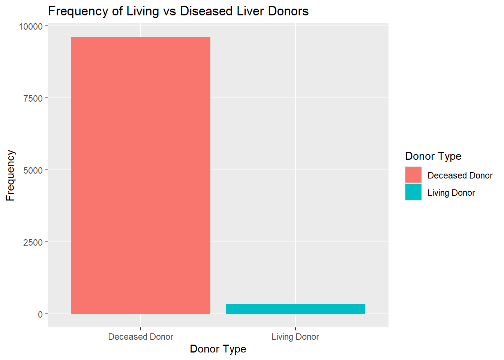
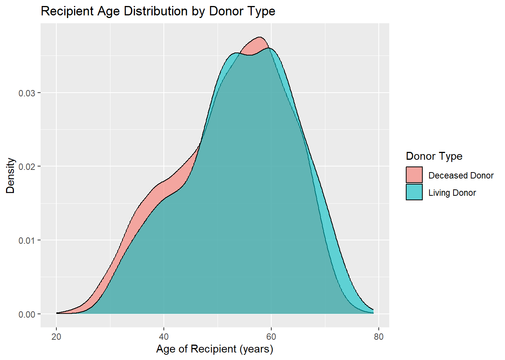
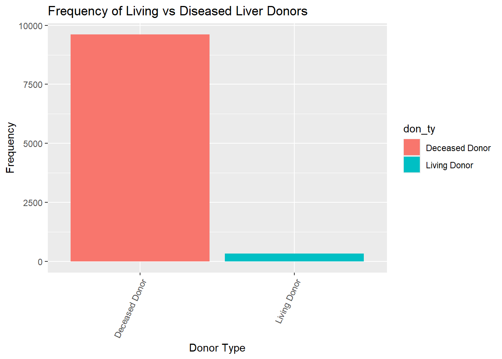
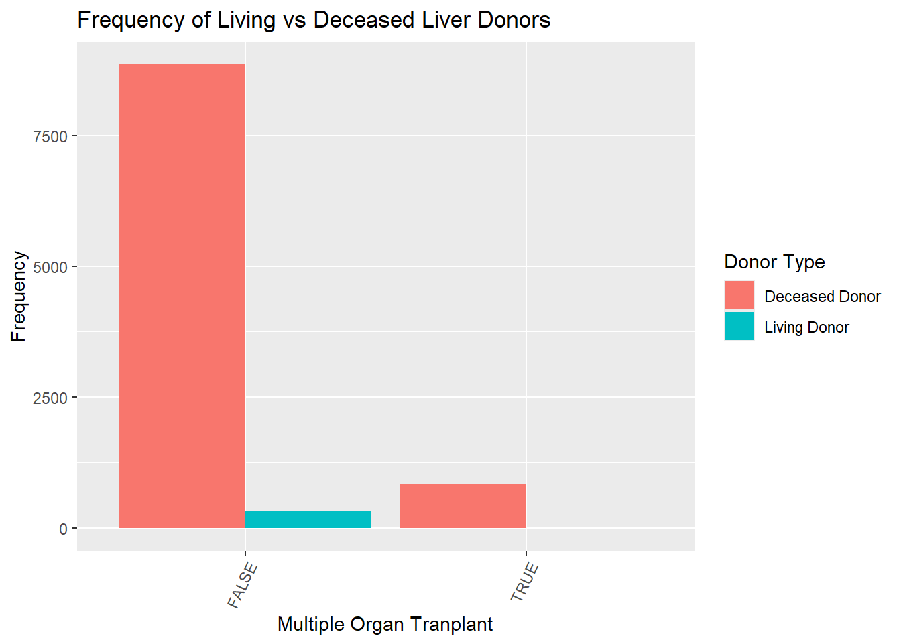
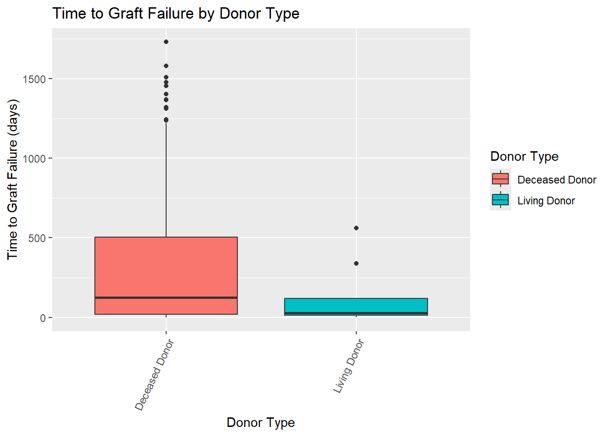
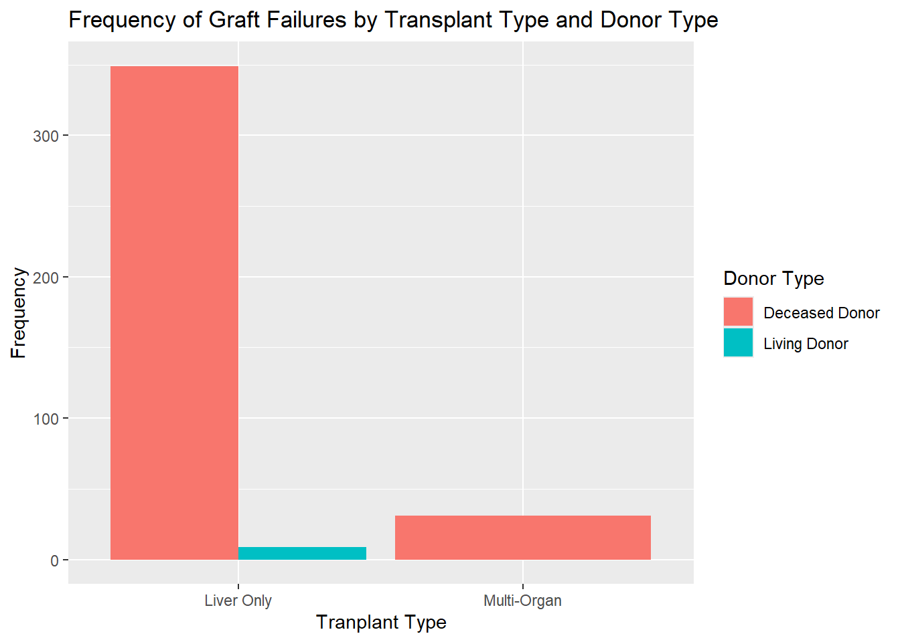

This page explores the relationship between the type of donor and the
recipient patient outcomes. The donor type was defined by the variable
DON_TY and identifies whether the patient received a
transplant from a deceased donor or from a living donor. The recipient
patient outcomes observed were graft failure and recipient patient
status at the last follow up. Additional variables were also created to
assess the patient outcomes, such as failed_graft and
date_to_fail.
# Load Packages
library(tidyverse)
library(haven)
library(arsenal)
library(kableExtra)
#Loads the Liver file
liver_data <-
read_sas("../../github/tx_li.sas7bdat")# This cleans the data and identifies alcohol subtypes
tidy_liver_df=
liver_data|>
mutate(tx_date = as_date(REC_TX_DT),
listing_date = as_date(CAN_LISTING_DT),
tx_year = year(tx_date),
days_listed = as.numeric(difftime(tx_date, listing_date, units = "days")),
alcohol_subtype = case_when(CAN_DGN%in% c(4215, 4216) | CAN_DGN2 %in% c(4215, 4216) ~ "Alcohol-related Cirrhosis",
CAN_DGN == 4217 | CAN_DGN2 == 4217 ~"Acute Alcohol-related Hepatitis",
TRUE ~ "Other"))%>%
# This filters the data for years from 2020, for recipients 18 years and older, and omits the alcohol subtype "Other"
filter(!is.na(PERS_ID) & !is.na(tx_date) & tx_year >= 2020 & REC_AGE_AT_TX>= 18, alcohol_subtype !="Other")|>
arrange(PERS_ID, tx_date)|>
janitor::clean_names()
# This creates a dataframe to observe patient status, donor types, and multi-organ transplants
pt_status_df =
tidy_liver_df |>
select(pers_id, don_ty, tx_date, rec_age_at_tx, rec_px_stat, rec_px_stat_dt, rec_tx_org_ty, alcohol_subtype, rec_cur_px_stat, tfl_lastatus, tfl_lafudate, tfl_graft_dt)|>
mutate(don_ty = case_match(
don_ty,
"C" ~ "Deceased Donor",
"L" ~ "Living Donor"),
tx_date = as.Date(tx_date),
rec_px_stat= case_match(
rec_px_stat,
"A" ~ "Living",
"R" ~ "Retransplanted",
"D" ~ "Dead",
"L" ~ "Lost",
"U" ~ "Unknown",
"X" ~ "Natural Disaster"),
tfl_lastatus= case_match(
tfl_lastatus,
"A" ~ "Living",
"R" ~ "Retransplanted",
"D" ~ "Dead",
"L" ~ "Lost to Follow Up",
"N" ~ "Not Seen"),
rec_cur_px_stat = case_match(
rec_cur_px_stat,
"A" ~ "Alive",
"D" ~ "Dead",
"F" ~ "Graft Failure: 1YR after graft failure",
"G" ~ "Graft Failure: graft failure",
"L" ~ "Lost",
"R" ~ "Retransplanted",
"S" ~ "Graft Failure: 2YR after graft failure"
))|>
filter(rec_tx_org_ty %in% c("LI", "KI LI 2LD", "KI LI", "KI LI IN", "KI LU", "KP LI", "KP LI IN", "LI HL", "LI HR", "LI IN", "LI LU", "PA LI", "PA LI IN", "PA LI LU"))|>
mutate(
multi_organ =as.factor(rec_tx_org_ty != "LI"))|>
mutate(
days_to_lafollow = as.numeric(difftime(tfl_lafudate, tx_date, units = "days")),
days_to_follow = as.numeric(difftime(rec_px_stat_dt, tx_date, units = "days")),
days_to_fail = as.numeric(difftime(tfl_graft_dt, tx_date, unit = "days")),
failed_graft = !is.na(tfl_graft_dt))# This code chunk creates a frequency table and column chart for the living vs deceased donor types.
pt_status_df|>
group_by(don_ty)|>
summarize(frequency = n_distinct(pers_id))|>
ggplot()+
geom_col(aes(don_ty, frequency, fill = don_ty, position = "dodge"))+
labs(
title = "Frequency of Living vs Diseased Liver Donors",
x = "Donor Type",
y = "Frequency"
)
pt_status_df|>
group_by(don_ty)|>
summarize(Frequency = n_distinct(pers_id))|>
rename("Donor Type" =don_ty)|>
kable(
format = "html",
caption = "Frequency of Donor Types",
align = c("l", "r", "r")
) |>
kable_styling(
bootstrap_options = c("striped", "hover"),
full_width = FALSE)| Donor Type | Frequency |
|---|---|
| Deceased Donor | 9613 |
| Living Donor | 333 |
There is a significantly greater frequency of liver donations received from deceased organ donors, compared to living organ donors. The following analyses will contain a much greater sample of patients who received a transplant from a deceased donor than those who received a transplant from a living donor.
pt_status_df|>
group_by(don_ty, rec_age_at_tx)|>
ggplot(aes(x= rec_age_at_tx, fill = don_ty))+
geom_density(alpha = 0.6)+
labs(
title = "Recipient Age Distribution by Donor Type",
x = "Age of Recipient (years)",
y = "Density",
fill = "Donor Type"
) This figure demonstrates the age distribution of recipients based on their donor type. There is a similar trend in the densities of recipient age. However, there is a slightly greater density of older ages among those with living donors than those with deceased donors. Among both donor types, the greatest density of transplants occur for recipients between approximately 50-65 years old.
The patient status (tfl_lastatus) was also included to
identify if the patient was living, dead, retransplanted, lost to follow
up, or not seen, at the last follow up.
# Column chart of last patient status for those who recieved organ transplant from deceased donor
pt_status_df|>
filter(don_ty == "Deceased Donor")|>
group_by(tfl_lastatus)|>
summarize(frequency = n())|>
drop_na()|>
ggplot(aes(fct_reorder(tfl_lastatus, frequency), y = frequency, fill = tfl_lastatus))+
geom_col(position = "dodge")+
labs(
title = "Frequency of of Last Patient Status (Deceased Donors)",
x = "Last Patient Status",
y = "Frequency",
fill = "Last Patient Status"
)+
theme(axis.text.x = element_text(angle = 45, hjust = 1))
pt_status_df|>
filter(don_ty == "Living Donor")|>
group_by(tfl_lastatus)|>
summarize(frequency = n())|>
ggplot(aes(fct_reorder(tfl_lastatus, frequency), y = frequency, fill = tfl_lastatus))+
geom_col(position = "dodge")+
labs(
title = "Frequency of of Last Follow-Up Patient Status (Living Donors)",
x = "Last Follow-Up Status",
y = "Frequency",
fill = "Last Follow-Up Status"
)+
theme(axis.text.x = element_text(angle = 45, hjust = 1))
There is a similar trend in the frequencies of each category of last follow-up status. Across donor types, the most frequent follow-up status was “Living”, followed by “Dead”. The least frequent follow-up status was “Lost to Follow Up”, this suggests that there is a strong follow up retention across the ALD cohort.
The first measure of patient outcomes observed were graft failures.
The ALD cohort was filtered to create a subsample of patients who
experienced graft failures. Graft failures were identified by the
presence of a graft failure date (tfl_graft_dt). The time
to graft failure (time_to_fail) was computed from the
difference in days between the transplant date (tx_date)
and graft failure date (tfl_graft_dt).
# Subsample of Graft Failures: This code chunk creates a dataframe that includes information only for patients who experienced a graft failure.
graft_failures2 =
pt_status_df|>
group_by(don_ty)
graft_failures =
pt_status_df|>
filter(failed_graft == TRUE)
graft_failures|>
group_by(don_ty)|>
summarize("Graft Failures" = n())|>
rename("Donor Type" =don_ty)|>
kable(
format = "html",
caption = "Graft Failures by Donor Type",
align = c("l", "r", "r")
) |>
kable_styling(
bootstrap_options = c("striped", "hover"),
full_width = FALSE)| Donor Type | Graft Failures |
|---|---|
| Deceased Donor | 380 |
| Living Donor | 9 |
From the entire ALD cohort, there were 389 recipients who ever experienced a graft failure. There were 380 graft failures among recipients who received a transplant from a deceased donor and 9 graft failures among recipients who received a transplant from a deceased donor.
# Frequency Table of Graft Failure by Donor Type and Histogram of Time to Failure
graft_failures|>
group_by(pers_id)|>
ggplot()+
geom_boxplot(aes(don_ty, days_to_fail, fill = don_ty))+
labs(
title = "Time to Graft Failure by Donor Type",
x = "Donor Type",
y = "Time to Graft Failure (days)",
fill = "Donor Type"
)+
theme(axis.text.x = element_text(angle = 65, hjust = 1)) This figure illustrates the time to graft failure by donor type. The median time to graft failure for transplants with a deceased donor was greater than the median time to graft failure for transplants with a living donor. The upper quartile is much higher for transplants with a deceased donor than living donor, suggesting that there is a greater time of the graft duration before graft failure.
# Frequency Table of Multi-Organ Transplants by Donor Type and Column Chart of Frequencies
graft_failures|>
group_by(don_ty, multi_organ)|>
summarize(frequency = n())|>
pivot_wider(
names_from = multi_organ,
values_from = frequency
)|>
rename("Donor Type" =don_ty)|>
rename("Mutli-Organ" = "TRUE")|>
rename("Liver Only" = "FALSE")|>
kable(
format = "html",
caption = "Transplant Type by Donor Type",
align = c("l", "r", "r")
) |>
kable_styling(
bootstrap_options = c("striped", "hover"),
full_width = FALSE)| Donor Type | Liver Only | Mutli-Organ |
|---|---|---|
| Deceased Donor | 349 | 31 |
| Living Donor | 9 | NA |
pt_status_df|>
mutate(multi_organ = case_match(
multi_organ,
"TRUE" ~ "Multi-Organ",
"FALSE" ~ "Liver Only"))|>
group_by(don_ty, multi_organ)|>
summarize(frequency = n())|>
ggplot(aes(multi_organ, frequency, fill = don_ty))+
geom_col(position = "dodge")+
labs(
title = "Frequency of Living vs Deceased Liver Donors",
x = "Tranplant Type",
y = "Frequency",
fill = "Donor Type"
)
The subsample of recipients with graft failures was further stratified
by the type of transplant they recieved. Transplant Type was identified
by the organ transplanted under the variable
(rec_tx_org_ty). If the only organ listed was liver, then
the transplant type was categorized as “Liver Only”, if an organ was
listed in addition to liver, then the transplant type was categorized as
“Multi-Organ”. There were no multi-organ transplants from living donors
that experienced graft failure. However, there were 9 Liver-Only
transplants from living donors that experienced graft failures.